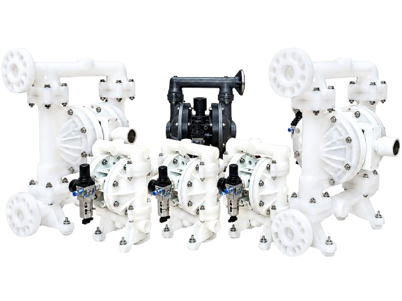
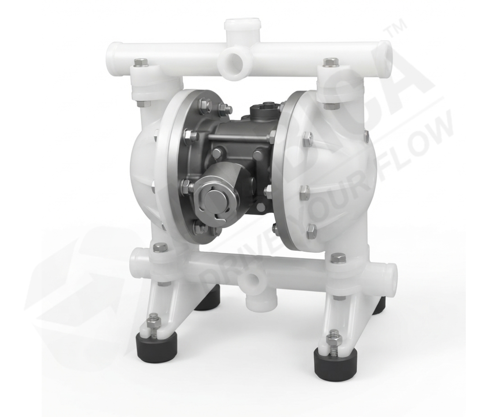
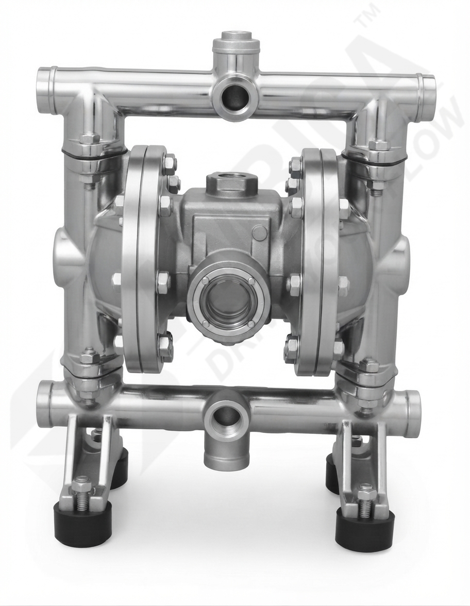
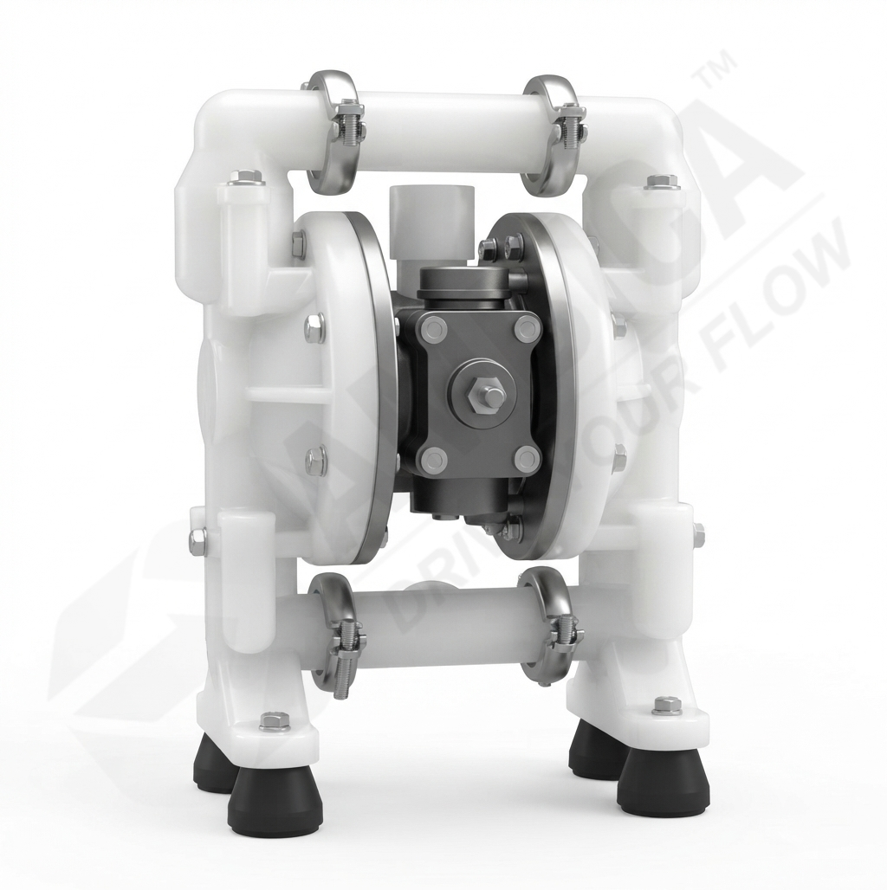
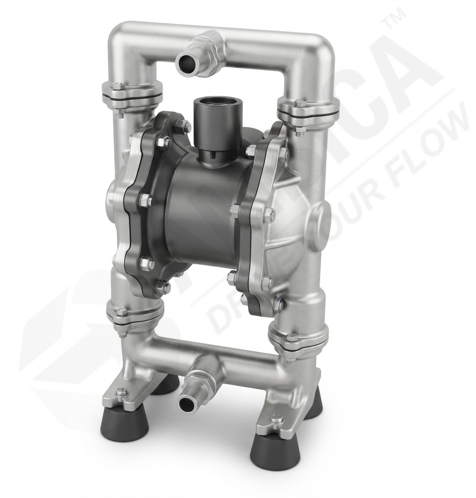
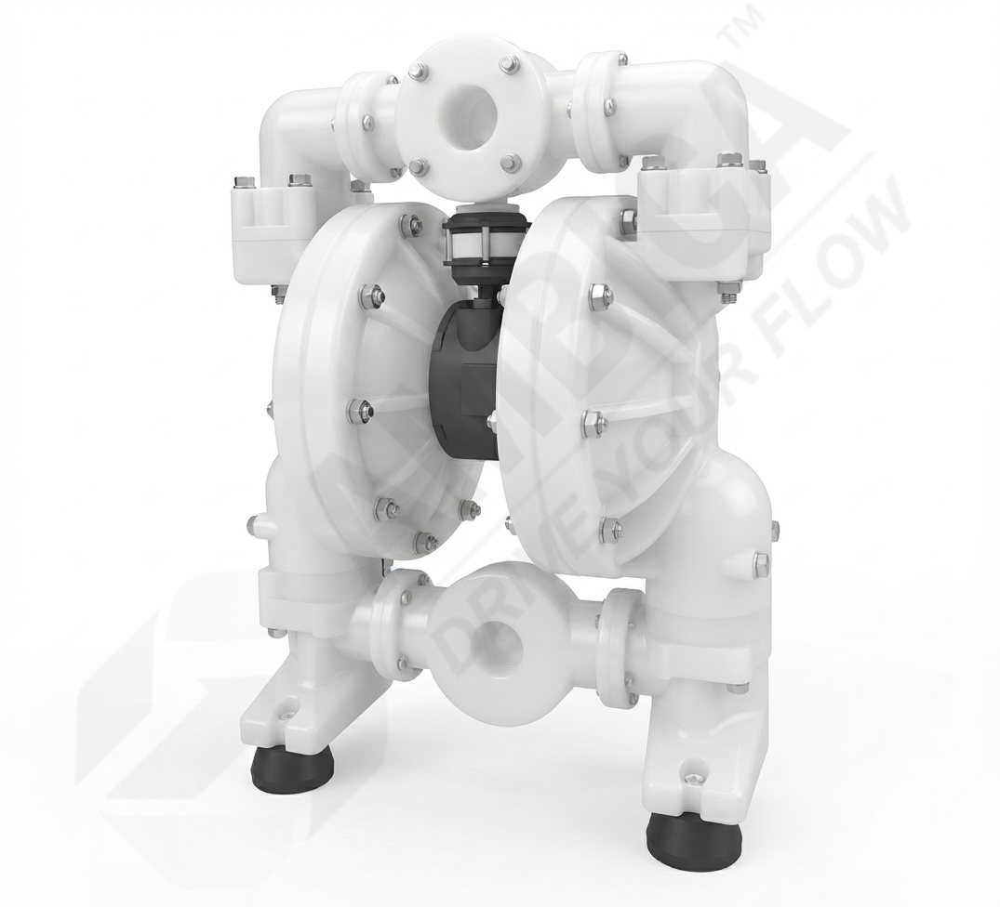
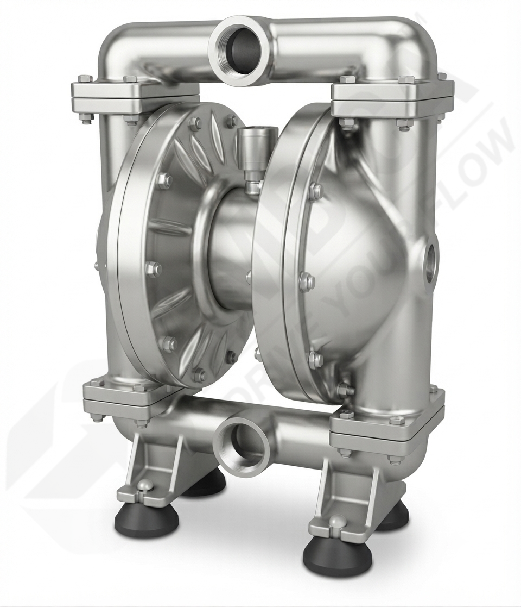
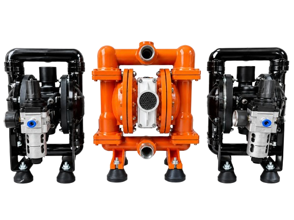

AODD Pump Manufacturer in India
Industrial Air Operated Double Diaphragm pumps for pneumatic fluid transfer, available in PP, PVDF, SS316 and aluminium configurations for chemical, pharmaceutical, food, paint, automobile, oil and general industrial applications.

AODD Pump Manufacturer and Supplier in India
An AODD pump (Air Operated Double Diaphragm Pump) is a pneumatic positive displacement pump used for transferring and handling a wide range of liquids. AODD pumps operate using compressed air and are suitable for applications where reliable and controlled fluid transfer is required.
Ambica Machine Tools is an industrial AODD pump manufacturer in India offering air operated double diaphragm pumps in different sizes and construction materials. Depending on the model and application, AODD pumps can be supplied in PP, PVDF, SS316 and aluminium construction.
As an AODD pump supplier in India, we provide pump configurations for chemical transfer, pharmaceutical processing, paint and coating applications, food and beverage handling, oil and lubricant transfer and general industrial fluid transfer requirements.
Industrial AODD Pump Solutions
Our Range of AODD Pumps
Air Operated Double Diaphragm pumps in different sizes and construction materials.


AODD Pump 1/2 Inch


AODD Pump 1 Inch


AODD Pump 1 1/2 Inch


AODD Pump 2 Inch
Types of AODD Pumps by Material
Material selection should be based on the liquid and required chemical and operating compatibility.
Polypropylene AODD Pumps
Suitable for many chemical-transfer applications where corrosion resistance and material compatibility are important.
PVDF AODD Pumps
Can be selected for aggressive or corrosive liquids where higher chemical resistance is required.
Stainless Steel AODD Pumps
Robust construction for suitable industrial process and fluid-transfer applications.
AODD Pump Materials of Construction
Choose construction according to the liquid, temperature and chemical compatibility requirements.
Polypropylene
For suitable chemical applications.
PVDF
For higher chemical resistance.
Stainless Steel
For selected industrial fluids.
Aluminium
For selected applications.
How to Select the Right AODD Pump?
Selection should be based on the actual process conditions rather than pump size alone.
| Parameter | What to Consider |
|---|---|
| Fluid | Chemical name, oil, solvent, water-based fluid or other liquid. |
| Viscosity | Fluid thickness can affect pump configuration and air consumption. |
| Solids | Check particle size and solids content. |
| Flow Rate | Determine required flow in LPM. |
| Pressure | Consider discharge pressure and available air pressure. |
| Material | Confirm PP, PVDF, SS316 or aluminium compatibility. |
| Temperature | Check operating temperature against selected materials. |
Air Operated Double Diaphragm Pump Manufacturer
AODD pumps use compressed air to operate a positive displacement pumping mechanism and can be selected for a wide variety of compatible industrial fluid-transfer duties.

Industrial Pneumatic Diaphragm Pump Solutions
Ambica Machine Tools manufactures and supplies Air Operated Double Diaphragm pumps for chemical, pharmaceutical, food, paint, automobile, oil and general industrial applications.
Depending on the model and application, construction can be available in PP, PVDF, stainless steel 316 and aluminium. Selection should consider the liquid, chemical compatibility, viscosity, solids content, pressure and operating conditions.
The referenced range includes 1/2 inch, 1 inch, 1 1/2 inch and 2 inch pump sizes.
- Compressed-air operated positive displacement design
- Multiple body and wetted-material configurations
- Multiple pump sizes for different requirements
- Suitable configurations for industrial fluid transfer
Why Use an AODD Pump?
Air-operated diaphragm pumps offer useful characteristics for industrial fluid-transfer duties when correctly selected.
Compressed-Air Operation
Pneumatic operation is useful where an air-driven pumping system is preferred.
- No electric motor at the pump drive
- Operation depends on compressed-air supply
Fluid Handling Flexibility
Selected configurations can handle compatible industrial liquids, including some viscous or solids-containing fluids.
- Multiple material options
- Different diaphragm choices
Industrial Applications
AODD pumps are used across industries requiring pneumatic fluid transfer.
- Chemical and paint transfer
- Industrial process applications
Industries Using AODD Pumps
Common application areas include:
Why Choose Ambica Machine Tools?
Industrial pump manufacturing experience with multiple AODD pump configurations.
20+ Years of Experience
More than two decades of industrial pump manufacturing experience.
Multiple Pump Sizes
1/2 inch, 1 inch, 1 1/2 inch and 2 inch sizes in the referenced range.
Multiple Materials
PP, PVDF, SS316 and aluminium configurations depending on model.
Quality Focus
Manufacturing, assembly and testing processes focus on dependable performance.
Application Support
Technical requirements can be reviewed before selecting a pump.
Industrial Product Range
Other industrial pumping and fluid-handling equipment is also available.
AODD Pump FAQs
What is an AODD pump?
An AODD pump, or Air Operated Double Diaphragm pump, is a pneumatic positive displacement pump driven by compressed air for transferring compatible industrial fluids.
What materials are available for AODD pumps?
Depending on the model and application, AODD pumps can be available in PP, PVDF, stainless steel 316 and aluminium configurations.
What sizes of AODD pumps are available?
The referenced range includes 1/2 inch, 1 inch, 1 1/2 inch and 2 inch AODD pump sizes.
Where are AODD pumps used?
AODD pumps are used for compatible fluid transfer in chemical, pharmaceutical, paint, food, automobile, oil and general industrial applications.
Can AODD pumps handle viscous liquids?
Selected configurations can be considered for viscous liquids. Actual suitability depends on viscosity, flow requirement, pump size, diaphragm material and air supply.
How do I select the right AODD pump?
Consider fluid, chemical compatibility, viscosity, solids content, required flow, pressure, temperature, connection size and available compressed-air conditions.
Need Help Selecting an AODD Pump?
Share your liquid type, required flow, pressure, temperature, pump size and material preference for technical guidance.